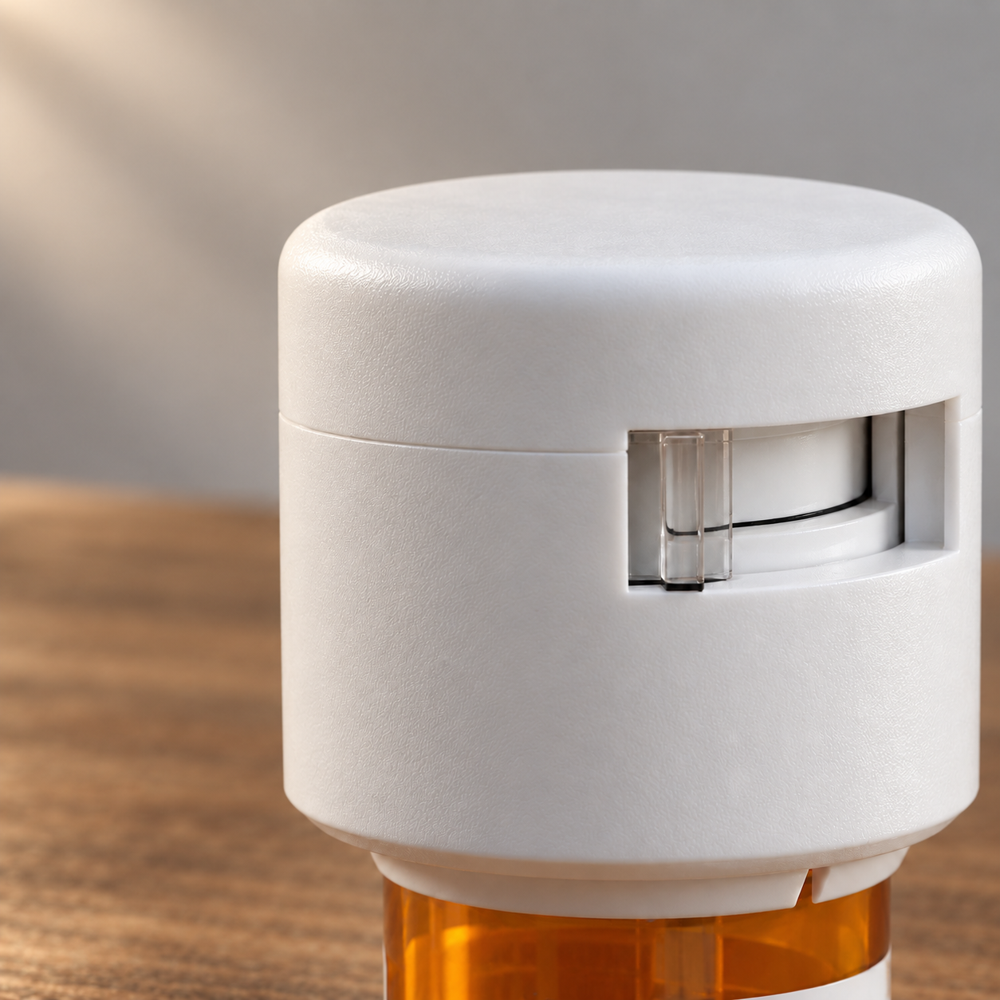
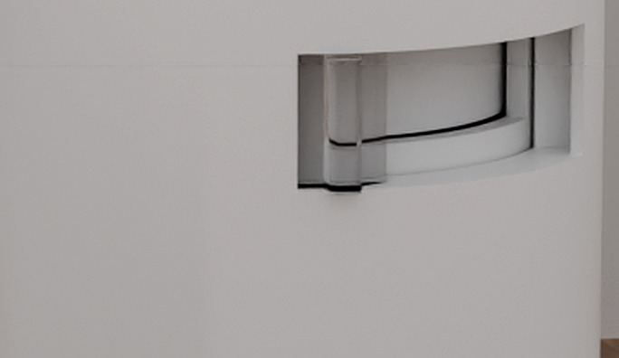
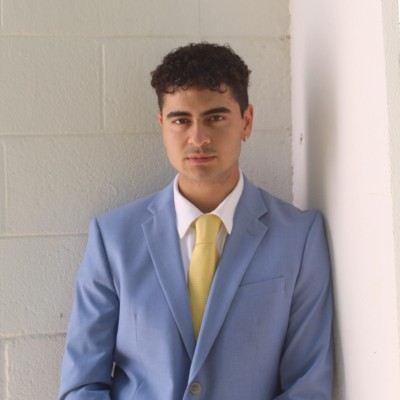
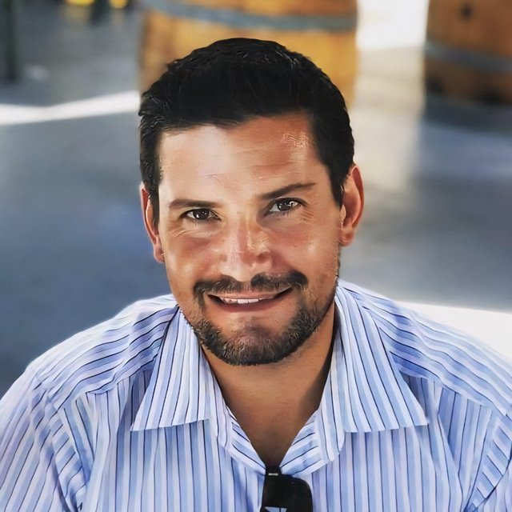

Patent-pending · Controlled-access packaging
Locked by default. Presents a single dose at the scheduled time. Re-locks on its own — no app, no reminders, nothing to remember.
Working prototype pictured. Built for grant-funded research teams and FDA-track clinical studies.

Why research teams add FailSafe
Self-report diaries, pill counts, and refill data all share the same blind spot: none of them can confirm a dose was taken on schedule. Adding a FailSafe cap to a study closes that gap without adding work for the participant.
A timestamped, tamper-evident access event replaces a self-reported memory of one — removing recall bias and social-desirability bias from your adherence measure.
Dose-timing consistency, drift over the course of a study, and non-adherence patterns are invisible to pill counts and diaries. FailSafe logs the moment access happens, every time.
No app to open, no screen to acknowledge, nothing for the participant to remember. The cap behaves like an ordinary bottle, so it doesn't introduce a new source of dropout or non-compliance.
Structured, exportable event logs strengthen the next grant report or FDA submission with device-verified data instead of a participant's word.
Why it's different
The iris mechanism presents exactly one dose per authorized cycle — not a reminder, an actual lock.
Every access event is timestamped and tamper-evident, captured on-device the instant it happens.
No app, no screen, no pairing. The mechanism works the same way a standard pharmacy bottle does.
Every safeguard ends at dispensing
Manufacturing controls, DEA tracking, child-resistant packaging, pharmacist counseling — every layer is built to prevent harm before the bottle goes home. Once it does, nothing physically enforces who opens it, or when. Post-dispensing household access — not illicit markets — is the leading diversion pathway.
Of Rx pain-reliever misusers got the drugs from a friend or relative.
Opioid-involved overdose deaths in 2023 — roughly 10× the 1999 rate.
Americans who misused a prescription pain reliever in the past year.
Pediatric ER visits for unsupervised medication exposure, 2009–2020.
Who FailSafe is for
Self-report and pill counts can't tell a grant program officer or an FDA reviewer whether a dose was actually taken on schedule. FailSafe closes that gap with a timestamped, tamper-evident event log — more data, captured more reliably, for whichever kind of study you're running.
FailSafe caps and our monthly access-event subscription are typically funded as an equipment or data-collection line item inside your own award — we sell the hardware and software, we're not a co-applicant or party to your grant. Every access event is a data point: not just whether a dose was taken, but when, how consistently, and how that pattern shifts over the study.
Grant mechanisms research teams have used to fund a FailSafe deployment:
| NIH / NIDA SBIR & STTR | Up to $314K |
| NSF Smart & Connected Health | $300K–$1.2M |
| SAMHSA PDOA | $500K–$2M/yr |
| VA HSR&D · RR&D · Spark | $25K–$500K/yr |
Sponsors already spend $125K–$2.1M per study on ePRO/eCOA data collection. A cap opening is an objective, time-stamped dose event — the same budget line, but evidence a reviewer doesn't have to take on faith.
FDA's own special-controls guidance for remote medication management systems already anticipates this category of device-verified adherence data. For Schedule II–IV take-home trials, the same event log doubles as DEA-facing accountability documentation, and real-time visibility can be delayed or restricted for blinded designs.
Contact us about your trialHow it works

By default, the iris mechanism inside the cap keeps the full supply sealed. From the outside, the bottle looks and behaves exactly like any other pharmacy container.
At the scheduled time, a two-stage motion — invert-and-twist to load, push-and-turn to release — presents exactly one dose. No app, no counting, nothing to acknowledge on a screen.
The mechanism re-secures itself the moment the cycle ends. It won't release an early or duplicate dose ahead of the next scheduled window.
Why FailSafe
| Method | Enforces timing | Objective log | No patient action |
|---|---|---|---|
| FailSafe | Yes | Yes | Yes |
| Self-report diaries | — | — | — |
| Pill counts & refill data | — | Partial | Yes |
| Adherence-monitoring caps | — | Yes | Yes |
| App-based tracking | — | — | — |
Refill timing shows a prescription was picked up, not that any dose was taken on schedule. Adherence-monitoring caps — including the AARDEX MEMS® Cap and devices covered by patents such as US 8,936,175 B1 — log an open event but don't prevent early, duplicate, or bulk access; their value is diagnostic, not preventive. App-based tracking depends on the subject remembering to self-confirm a dose.
From our founder

“The system fails the moment the pill leaves the pharmacy. That's where FailSafe begins.”
Clinical & technical advisory board
The regulatory pathway, the study design, and the mechanical engineering are each backed by a named advisor with direct, checkable credentials — not an anonymous advisory panel.
Attending physician, UC San Diego Medical Center. Aligns FailSafe's study design, endpoints, and protocol with clinical and IRB requirements.
Co-founder & Chief Product Officer, FyeLabs — 200+ products shipped. Leads mechanical engineering on the iris-diaphragm dispensing core.
IP and patent strategy for the non-provisional filing covering both the mechanical and connected product lines.
Corporate structure and financing matters, including the seed round and SAFE documentation.
Leadership
Clinical and neuroscience training at UC San Diego. Data QA/QC inside Stanford's Department of Pathology. Clinical research with underserved patients in Tijuana. Leads product strategy, research and clinical trial partnerships, fundraising, and regulatory strategy — FailSafe's primary point of contact with the FDA.

Principal of Backbone Medical Holdings, a strategic consulting, holding, and investment firm focused on the medical device sector. Co-founder and former Chief Business Officer of BioMetal Health, and buyer/CEO of Valley View Medical Holdings. Leads strategic partnerships, deal structuring, and grant and investor relationships.
Regulatory pathway & evidence
Dual pathway: the mechanical cap targets CPSC/PPPA child-resistant packaging — no FDA submission required. The connected cap targets Class II 510(k) clearance under 21 CFR §880.6315, via predicate EMMA (K150174). Q-Sub engagement underway.
Patent in progress: non-provisional filing underway with Perkins Coie, covering both product lines.
30+ interviews with pharmacists and clinicians through NSF I-Corps, including UCSD and Kaiser, plus outpatient MAT clinic outreach.
Proof of concept scoped and priced with FyeLabs, our confirmed manufacturing partner.
Looking ahead
Grant-funded research and FDA-track trials are the launch focus. The same mechanism carries a much wider case as the product matures.
A reusable cap architecture and manufacturer-level integration that embeds safety as a product feature.
Liability protection and the confidence to prescribe appropriate durations without undermining intent after dispensing.
Prevention-focused exposure reduction against the costs of over-prescription and misuse.
Supports the expanded take-home privileges SAMHSA guidelines now permit for buprenorphine and methadone.
Protection for children, seniors, and veterans managing complex regimens in shared homes.
Prototype units, the technical whitepaper, and detailed documentation are available under NDA for grant-funded research teams, FDA-track study sponsors, and investors.